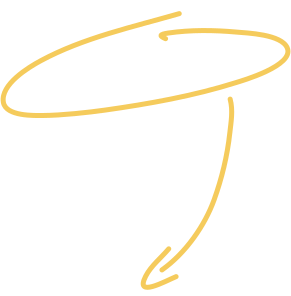

het gezicht achter de studio.
het gezicht achter de studio.
Mijn naam is Tim Goovers, 23 jaar oud en momenteel bezig met mijn vierde jaar als student Communication & Multimedia Design. Ik streef ernaar om merken te versterken en betere waardeproposities te ontwikkelen die leiden tot organische groei. Mijn expertise omvat branding, webdesign (ontwerp + front-end), content-creatie en grafisch ontwerp.